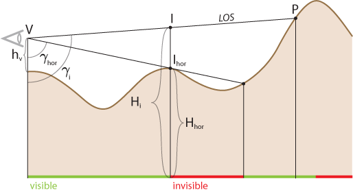
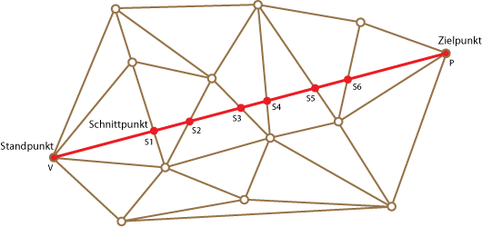
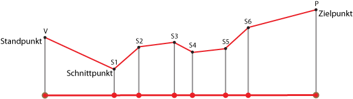
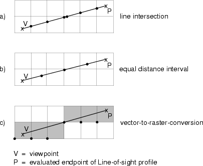

Vertiefungsbeispiel: Berechnung der Sichtbarkeit
Digitale Geländemodelle können für viele Ingenieur- und Planungsanwendungen eingesetzt werden. Als Beispiel wird in dieser Unit näher auf die Sichtbarkeitsanalyse eingegangen. Bei einer Sichtbarkeitsanalyse wird, ausgehend von einem digitalen Höhenmodell und einem gegebenen Punkt, berechnet, welche anderen Punkte im Gelände sichtbar sind. Das Prinzip von Sichtbarkeitsberechnungen wird zuerst im eindimensionalen Fall gezeigt und dann auf den zweidimensionalen Fall übertragen.
Im eindimensionalen Fall eines Profils wird zur Ermittlung der Sichtbarkeit eines Zielpunkts berechnet, ob ein Punkt zwischen dem Standort V und dem Zielpunkt P höher liegt als die Verbindungslinie (d. h. die Sichtlinie; engl. line of sight = LOS). Ist dies der Fall, so ist die Sichtlinie LOS blockiert und somit der Zielpunkt nicht sichtbar, andernfalls ist der Zielpunkt sichtbar. Am einfachsten programmiert man einen solchen Test, indem man prüft, ob die Neigung der Linie zwischen dem Standpunkt V und dem überprüften Zielpunkt P auf dem Profil grösser oder kleiner als diejenige der Linie zum letzt-gespeicherten Horizontpunkt Ihor ist. Oder anders gesprochen, ob der Vertikalwinkel γi zum aktuell überprüften Punkt größer (= sichtbar) oder kleiner (= unsichtbar) ist als der Vertikalwinkel γhor des letzten Horizonts.

In einem linear interpolierten dreiecksbasierten Geländemodell müssen zuerst die Höhen der Verbindungslinien-Schnittpunkte (von Standort und Zielpunkt) und der Dreiecksvermaschung berechnet werden, wie dies die nächste Abbildung zeigt.

Die Höhen an den Schnittpunkten S1 bis Sn können durch lineare Interpolation aus den Höhen der beiden Dreieckspunkte berechnet werden, die die betreffende Dreieckskante beschließen. Als Resultat ergibt sich ein Profil wie im eindimensionalen Fall (siehe Abbildung unten). Auf diesem Profil kann nun derselbe Algorithmus für die LOS-Ermittlung wie oben angewendet werden.

Ermittlung der Profile zwischen Standpunkt V und Zielpunkt P in einem gitterbasierten Geländemodell (Raster): Hier kann, analog zum dreiecksbasierten Fall, die Verbindungslinie mit den Kanten der durch das Gitter gebildeten Quadrate geschnitten und ein Profil erstellt werden (Abbildung a). Da die Berechnung der Schnittpunkte sehr rechenintensiv sein kann, gibt es Näherungsalgorithmen, um ein Profil zu berechnen. In der untenstehenden Abbildung werden zwei davon gezeigt: In Abbildung b) wird entlang der Sichtbarkeitslinie die Höhe in regelmäßigen Abständen abgefragt und gespeichert. Da jede Rasterzelle genau eine Höhe hat, muss somit nur berechnet werden, in welcher Rasterzelle der betreffende Zwischenpunkt liegt. In der Lösung von Abbildung c) wird der Sichtstrahl zuerst gerastert und dann die Höhe der so entstandenen Rasterzellen mit denjenigen des Geländemodells verglichen.

Sichtbarkeitsberechnungen gelangen in verschiedenen Anwendungen zum Einsatz. Ein erstes Beispiel ist die Platzierung eines Aussichtsturms. Mit einem digitalen Geländemodell können innerhalb sehr kurzer Zeit verschiedene Standorte geprüft werden. Außerdem kann die Berechnung mit verschiedenen Turmhöhen durchgeführt werden (Variation von hv). Ein weiteres Beispiel ist die Ausbreitung von elektromagnetischen Wellen (z. B. zur Planung von Mobilfunkantennen). Hier ist zu beachten, dass das Gebiet, in welchem elektromagnetische Signale empfangen werden können, nicht genau mit dem sichtbaren Gebiet übereinstimmt. Im GIS wird dies in der Regel dadurch korrigiert, dass die Höhe eines Punktes einen bestimmten Betrag unter der Sichtbarkeitslinie sein muss, damit an diesem Punkt das Signal nicht empfangen werden kann. Die Höhe dieses Betrages ist abhängig von der Wellenlänge. Ein letztes Beispiel stammt aus der Wildtierbiologie. Ein GIS kann hier eingesetzt werden, um ein optimales Gebiet zur Wiederansiedlung von Tierarten auszuwählen. Das Rocky-Mountain-Bighorn-Schaf beispielsweise hält sich (unter anderem) bevorzugt in Gebieten auf, welche nur von wenigen Orten aus gesehen werden können. Dies reduziert die Wahrscheinlichkeit, von einem Raubtier entdeckt zu werden.
Der untenstehende Kartenausschnitt zeigt die Umgebung des Türlersees in der Nähe von Zürich (Schweiz). Wenn Sie in die topographische Karte hineinklicken, können Sie sehen, welche Punkte vom markierten Betrachterstandort (roter Punkt) aus sichtbar sind und welche nicht. Nach Eingabe einiger Punkte erscheint ein Knopf „Karte einblenden“, mittels dessen die gesamte Sichtbarkeitskarte eingeblendet wird. Ist der Ort Aeugst vom Betrachtungsort aus einsehbar?
Klicken Sie auf einen Punkt in der Karte um zu sehen ob er vom roten Punkt aus sichtbar ist oder nicht. (Swisstopo 2000)Bearbeiten Sie...
Wie bereits erwähnt, werden (z.T. modifizierte) Sichtbarkeitsberechnungen unter Verwendung von digitalen Geländemodellen eingesetzt, um die Ausbreitung von elektromagnetischen Wellen zu berechnen. Dies wird von verschiedenen Mobiltelefonanbietern dazu genutzt, Karten zu erstellen, auf welchen die Gebiete eingefärbt sind, wo man mit einem Mobiltelefon Empfang hat. Auf der Internetseite der Telekommunikationsfirma T-Mobile können Sie sich ein solches Beispiel anschauen. Geben Sie z.B. für Marburg 35037 ein und lesen Sie die "Wichtigen Informationen".
- Können Sie aus Ihrem Wissen über die Erzeugung solcher Karten beurteilen warum T.Mobile nicht zu wissen scheint wo es Empfang gibt und wo nicht?
- Suchen Sie weitere ähnliche Beispiele im Internet.